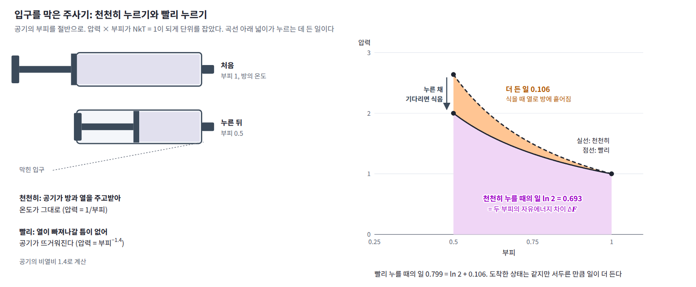
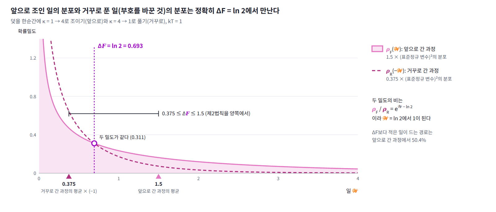
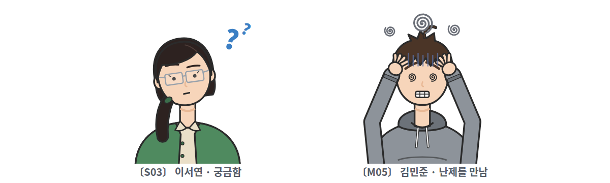
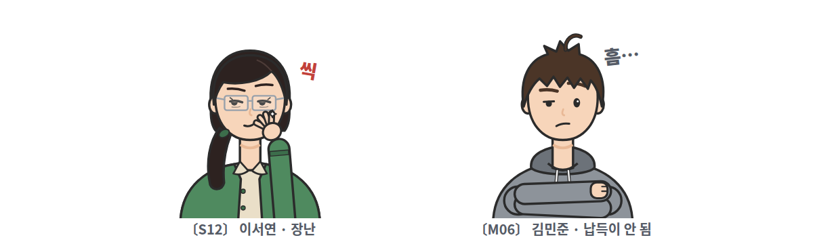

15장 — 비평형 통계역학과 야르진스키 등식
이 장에서 배우는 것
두 봉우리 분포에서 샘플을 뽑는 문제를 보자. 목표 분포는 −2와 +2에 표준편차 0.5인 봉우리가 하나씩 있고, 오른쪽 봉우리에 무게 0.8이 실려 있다. 잡음을 섞어 봉우리 사이 골짜기를 메운 분포에서 출발해, 잡음의 표준편차를 5에서 0.1까지 10단계로 줄이며 단계마다 랑주뱅 방정식을 몇 걸음씩 돌리는 방법이 송과 에르몬(2019)의 담금질 랑주뱅이다. 사슬 10만 개로 돌려 보면 단계마다 100걸음을 줄 때는 오른쪽 봉우리에 선 사슬의 비율이 0.795로 참값 0.8에 가깝지만, 10걸음이면 0.754, 1걸음이면 0.579로 뒤처진다. 분포를 바꾸는 빠르기를 샘플이 따라가지 못하는 것이다.
그런데 사슬마다 수 하나를 더 기록해 두면 이 뒤처짐을 정확히 되돌릴 수 있다. 잡음 수준을 바꾸는 순간에는 샘플이 그대로 있고 에너지 −ln p만 바뀐다. 그 바뀐 양을 사슬마다 모두 더한 값을 𝒲라 하고, 끝에서 사슬마다 e^(−𝒲)를 가중치로 달아 비율을 다시 세어 보자. 단계마다 100걸음, 10걸음, 1걸음을 준 세 경우 모두 0.803, 0.800, 0.801이 나오고, 랑주뱅을 한 걸음도 돌리지 않고 가중치만 달아도 0.800이다. 가중치의 평균 ⟨e^(−𝒲)⟩는 네 경우 모두 1.00 근처다. 잡음을 섞은 분포들이 모두 정규화되어 있어 분배함수의 비가 1이기 때문인데, 정규화되지 않은 에너지로 같은 계산을 하면 이 평균이 바로 분배함수의 비 Z₁/Z₀가 된다. 샐러쿠트디노프와 머리(2008)는 이렇게 제한 볼츠만 머신의 분배함수를 어림해 MNIST 테스트 데이터의 로그우도로 모델들을 비교했다. ML에서는 이 방법을 담금질 중요도 샘플링(annealed importance sampling, AIS)이라 부른다.

이 장의 답은 다음과 같다. 평형에 이를 시간을 주지 않고 분포를 끌고 다닌 샘플이라도, 에너지를 바꿀 때마다 계에 해 준 일 𝒲를 기록해 두면 평형의 양을 정확히 얻을 수 있다. 일의 지수 평균 ⟨e^(−β𝒲)⟩가 두 상태의 자유에너지 차이 ΔF로 정확히 e^(−βΔF) = Z₁/Z₀가 된다는 이 관계가 야르진스키 등식이다. 일의 평균 ⟨𝒲⟩는 늘 ΔF보다 크고, 그 차이인 소산된 일이 가중치가 얼마나 고르지 않은지, 곧 샘플 몇 개가 실제로 쓸모 있는지를 정한다.
이 장은 알갱이를 붙잡은 용수철 덫을 빠르게, 또는 천천히 조이는 작은 문제로 시작한다. 조이는 데 든 일의 평균과 지수 평균이 어떻게 다른지 본 뒤 일과 열, 야르진스키 등식을 정의하고, 가중치를 단 샘플(AIS)과 크룩스 정리로 넓힌다. 이 장을 마치면 AIS의 가중치가 왜 정확한지, ln Z의 추정값이 왜 아래로 치우치는지, IWAE와 ELBO의 틈이 왜 소산된 일인지, 확산 모델의 원 논문 제목에 왜 「비평형 열역학」이 들어 있는지, 그리고 같은 계산 예산으로 중간 분포의 사다리를 어떻게 짜야 하는지를 설명할 수 있게 된다.
역사: 부등식이 등식이 되기까지
온도가 일정한 계를 한 상태에서 다른 상태로 바꾸려면 일을 해 주어야 하고, 그 일은 자유에너지의 증가보다 작을 수 없다. 둘이 같아지는 것은 한없이 천천히 바꾸는 가역 과정뿐이고, 조금이라도 서두르면 남는 일이 열로 흩어진다. 자유에너지 차이를 알려면 한없이 천천히 바꾸거나, 아니면 평형 분포에서 뽑은 샘플로 따로 계산해야 했다. 20세기의 계산 방법들은 이 두 극단에서 나왔다.
| 연도 | 사람 | 내용 |
|---|---|---|
| 1935 | 커크우드 | 매개변수를 한없이 천천히 바꾸며 평균 힘을 적분해 자유에너지 차이를 얻음 (열역학적 적분) |
| 1954 | 츠반치히 | 에너지를 한 번에 바꾼 차이의 지수 평균으로 자유에너지 차이를 얻음 (자유에너지 섭동) |
| 1997 | 야르진스키 | 어떤 빠르기로 바꾸든 일의 지수 평균이 자유에너지 차이를 준다는 등식 |
| 1998 | 닐 | 같은 방법을 통계 계산에 쓴 담금질 중요도 샘플링(AIS), 2001년 출판 |
| 1998, 1999 | 크룩스 | 마르코프 사슬에서의 증명, 앞으로 간 경로와 거꾸로 간 경로의 확률 비 (크룩스 정리) |
| 2002 | 리파르트, 부스타만테 외 | RNA 분자 하나를 광학 집게로 비가역적으로 잡아당겨 야르진스키 등식을 실험으로 확인 |
| 2008 | 샐러쿠트디노프, 머리 | AIS로 제한 볼츠만 머신의 분배함수를 어림해 테스트 로그우도로 모델 비교 |
| 2015 | 졸-딕스타인 외 | 비평형 열역학에서 착안한 확산 확률 모델 |
1996년 6월 워싱턴 대학교 핵이론연구소에 있던 크리스토퍼 야르진스키는 『피지컬 리뷰 레터스』에 짧은 논문을 보냈고, 논문은 이듬해 「자유에너지 차이에 대한 비평형 등식」이라는 제목으로 실렸다. 초록의 첫 문장은 이렇다. 「계의 두 배치 사이의 평형 자유에너지 차이를, 한 배치에서 다른 배치로 매개변수를 바꾸는 동안 해 준 일을 유한한 시간에 잰 값들의 앙상블로 나타내는 식을 유도한다.」 한없이 천천히 바꾸는 커크우드의 방법과 한 번에 바꾸는 츠반치히의 방법이 이 식의 두 끝이고, 그 사이의 어떤 빠르기로 바꾸어도 된다는 것이 새로운 점이었다. 평균을 내는 방법만 바꾸면 부등식이 등식이 된다.
통계학자 래드퍼드 닐은 1998년 토론토 대학교의 기술 보고서에서 담금질 중요도 샘플링을 발표했다. 다루기 쉬운 분포에서 목표 분포로 중간 분포들을 거쳐 옮겨 가는 담금질은 원래 봉우리 사이에 갇히는 문제를 어림으로 다루는 방법이었는데, 닐은 중간 분포를 바꿀 때마다 가중치를 곱해 두면 그 결과가 정확한 중요도 샘플링이 된다는 것을 보였다. 논문에는 「독립적인 연구에서 야르진스키가 주로 자유에너지 추정을 겨냥해, 여기서 설명하는 담금질 중요도 샘플링과 본질적으로 같은 방법을 설명했다」는 문장이 있다. 물리학자와 통계학자가 거의 같은 때 같은 식에 이른 것이다.
2002년 리파르트와 부스타만테의 연구진은 RNA 분자 하나의 양 끝을 구슬 두 개에 이어 한 구슬은 광학 집게로, 다른 구슬은 가는 유리관(마이크로피펫) 끝에 붙잡고, 접힌 상태에서 펴진 상태로 잡아당기며 한 일을 쟀다. 빨리 당길수록 잰 일은 더 크게 흩어졌고 그 평균은 자유에너지 차이보다 컸다. 그러나 비가역적으로 당겨 잰 일들로 계산한 지수 평균은 가역적으로 천천히 당길 때 든 일의 평균(자유에너지 차이를 따로 어림한 가장 믿을 만한 값)과 kT의 절반 안에서 맞았다. 평형을 기다리지 않은 측정에서 평형의 양을 얻는다는 등식의 약속이 분자 하나에서 확인된 것이다.
작은 문제: 용수철 덫을 조이는 데 드는 일
물속에 뜬 알갱이 하나가 용수철처럼 작용하는 덫에 붙잡혀 있다. 레이저 빛을 한 점에 모아 만드는 광학 집게가 이런 덫이다. 알갱이가 덫의 가운데서 x만큼 벗어나면 위치에너지가 κx²/2이고, κ는 덫이 얼마나 단단한지를 나타내는 용수철 상수다. 물의 온도는 kT = 1로 두고, 알갱이는 처음에 κ = 1인 덫 안에서 평형을 이루고 있다. 그래서 알갱이의 위치는 평균 0, 분산 kT/κ = 1인 정규분포를 따른다.
이제 덫을 조여 κ를 1에서 4로 올린다. κ를 올리는 순간 알갱이가 어디에 있든 그 자리의 에너지가 올라가므로, 우리가 계에 일을 해 준 것이다. 알갱이가 x에 있을 때 κ를 dκ만큼 올리면 에너지가 x² × dκ/2만큼 늘고, 조이는 동안 이것을 모두 더한 값이 한 번 조이는 데 든 일 𝒲다. 조이는 동안 알갱이는 가만히 있지 않고 랑주뱅 방정식을 따라 움직인다. 덫을 한순간에 조이면 알갱이가 움직일 틈이 없고, 천천히 조이면 알갱이가 좁아지는 덫을 따라 가운데로 모여들어 κ를 올릴 때마다 드는 일이 줄어든다.

같은 실험을 10만 번 되풀이하며 조이는 데 걸리는 시간을 0(한순간), 0.1, 1, 10으로 바꿔 보자. 조일 때마다 일 𝒲를 재어 그 평균과, e^(−𝒲)의 평균에 −ln을 씌운 값을 구하고, 다 조인 순간 알갱이 위치의 제곱 평균도 함께 적었다.
| 조이는 시간 | 일의 평균 ⟨𝒲⟩ | −ln⟨e^(−𝒲)⟩ | 끝에서 ⟨x²⟩ |
|---|---|---|---|
| 0 (한순간) | 1.500 | 0.6932 | 1.000 |
| 0.1 | 1.374 | 0.6957 | 0.758 |
| 1 | 0.937 | 0.6933 | 0.289 |
| 10 | 0.726 | 0.6938 | 0.252 |
세 가지가 눈에 띈다. 첫째, 일의 평균은 천천히 조일수록 줄어서 한순간에 조이면 1.500이던 것이 시간 10에서는 0.726이 된다. 둘째, 다 조인 순간의 알갱이는 새 덫의 평형에 있지 않다. κ = 4인 덫의 평형 분산은 kT/κ = 0.25인데, 한순간에 조이면 알갱이의 분포가 옛 덫의 것 그대로(1.000)이고 시간 0.1에서도 0.758로 한참 뒤처져 있다. 셋째, 그런데 e^(−𝒲)의 평균으로 계산한 마지막 열은 조이는 빠르기와 상관없이 모두 0.693 근처다.
빠르기에 따라 일의 평균은 두 배 넘게 달라지는데 왜 지수 평균은 그대로일까? 0.693이라는 수는 무엇이고, 천천히 조일수록 일의 평균이 이 수에 다가가는 것처럼 보이는 까닭은 무엇일까?
패턴: 일의 평균은 ΔF보다 크고, 지수 평균은 정확히 ΔF를 준다
0.693부터 풀어 보자. 용수철 상수가 κ인 덫의 분배함수는 가우스 적분 Z(κ) = ∫e^(−κx²/2kT)dx = √(2πkT/κ)이므로, κ = 1인 덫과 κ = 4인 덫의 자유에너지 차이는 ΔF = −kT ln(Z(4)/Z(1)) = (kT/2) ln 4 = kT ln 2다. kT = 1이면 0.693이다. 마지막 열은 조이는 빠르기와 상관없이 두 덫의 자유에너지 차이를 준 것이다.
한순간에 조이는 경우는 손으로 확인할 수 있다. 알갱이가 움직일 틈이 없으므로 일은 처음 위치 하나로 정해져 𝒲 = (4 − 1)x²/2 = 1.5x²이고, x²의 평균이 1이니 일의 평균은 1.5kT다. 한편 e^(−β𝒲)의 평균은 처음 분포 위에서 에너지 차이의 지수를 평균한 것이어서, 적분 안에서 옛 에너지가 지워지고 새 에너지만 남는다.
덫에서는 Z(4)/Z(1) = 1/2이고, 표의 첫 줄이 0.6932 = −ln 0.5000을 준 까닭이 이것이다. 이 계산은 한 가지를 더 알려 준다. 옛 분포에서 뽑은 샘플에 e^(−β𝒲)를 곱하면 적분 안에서 옛 분포가 새 분포로 바뀌므로, 옛 덫에 머물러 있는 알갱이들도 이 가중치를 달면 새 덫의 평형 분포를 나타낸다. 실제로 한순간에 조인 알갱이들의 ⟨x²⟩는 1.000이지만 e^(−𝒲)로 가중해 평균하면 0.251로 새 평형의 0.25가 된다.
반대쪽 끝은 한없이 천천히 조이는 경우다. 이때 알갱이는 매 순간 그때의 덫에서 평형을 이루므로 κ를 dκ만큼 올리는 데 드는 일은 평형 평균 ⟨x²⟩dκ/2 = (kT/κ)dκ/2이고, 1에서 4까지 더하면 (kT/2) ln 4 = kT ln 2, 곧 ΔF 자체다. 매 순간 드는 일이 평형 평균으로 정해지므로 실험마다 일이 달라지지도 않는다. 조이는 시간 10에서 일의 평균이 0.726으로 0.693에 가까웠던 것은 이 끝에 다가가고 있었기 때문이다.
그 사이의 빠르기에서는 실험마다 일이 흩어진다. 흩어진 값의 지수 평균이 e^(−βΔF)로 고정되어 있으면, 지수함수가 아래로 볼록하므로 ⟨e^(−β𝒲)⟩ ≥ e^(−β⟨𝒲⟩)에서 ⟨𝒲⟩ ≥ ΔF가 저절로 나온다. 일의 평균이 자유에너지 차이보다 작을 수 없다는 열역학 제2법칙이 여기서 부등식으로 따라 나오는 것이다. 알갱이 하나에서는 흩어짐이 평균만큼 커서, 한순간에 조일 때도 실험의 절반쯤(0.504)은 ΔF보다 적은 일로 끝났다. 제2법칙은 평균에 대한 말이고, 지수 평균에서는 일이 적게 든 드문 경로들이 큰 가중치를 받아 평균을 정확히 ΔF에 맞춘다.
정리하면 패턴은 두 줄이다. 어떤 빠르기로 조이든 일의 지수 평균은 −kT ln⟨e^(−β𝒲)⟩ = ΔF를 정확히 주고, 일의 평균은 ⟨𝒲⟩ ≥ ΔF여서 천천히 조일수록 ΔF에 다가간다.
정의: 일과 열, 야르진스키 등식
덫의 용수철 상수처럼 바깥에서 조절하는 매개변수를 λ라 하고, 그 값에 따라 위치에너지가 U_λ(x)로 정해진다고 하자. 매개변수를 λ₀에서 λ₁로 바꾸는 과정을 잘게 나누면, 한 칸마다 두 가지 변화가 번갈아 일어난다. 먼저 알갱이는 그 자리에 둔 채 매개변수만 λ_(k−1)에서 λ_k로 바꾸고, 다음으로 매개변수는 그대로 둔 채 알갱이가 열원과 부딪히며 x_(k−1)에서 x_k로 움직인다. 앞의 것이 바꾼 에너지를 모두 더한 것이 일이고, 뒤의 것이 바꾼 에너지를 모두 더한 것이 열이다.
𝒲를 일 (위치를 그대로 둔 채 매개변수를 바꿀 때 계의 에너지가 늘어난 양, work)이라 하고, Q를 열 (매개변수를 그대로 둔 채 계가 움직이며 열원과 주고받은 에너지, heat)이라 한다. 일을 필기체 𝒲로 쓰는 것은 경우의 수 W와 구별하기 위해서다. 둘을 더하면 처음과 끝의 에너지 차이가 되는데, 이것은 경로 하나하나에서 성립하는 에너지 보존, 곧 열역학 제1법칙이다.

입구를 막은 주사기의 피스톤을 누르는 경우를 생각해 보자. 피스톤을 한없이 천천히 누르면 안의 공기가 방의 온도를 유지하며 줄어들고, 이때 든 일이 두 부피 사이의 자유에너지 차이다. 피스톤을 확 누르면 공기가 순간적으로 뜨거워져 더 세게 밀어내므로 같은 부피까지 누르는 데 일이 더 든다. 누른 채로 기다리면 공기는 방의 온도로 식어 천천히 누른 경우와 같은 상태가 되고, 더 들인 일은 열로 방에 흩어진다. 같은 곳에 도착해도 서두르면 일이 더 든다는 것이 부등식 ⟨𝒲⟩ ≥ ΔF의 일상판이다.

이제 두 가지 조건을 두자. 처음 위치는 λ₀의 평형 분포 p_λ₀ ∝ e^(−βU_λ₀)에서 뽑는다. 그리고 매개변수가 λ_k일 때 알갱이를 움직이는 규칙은 그때의 평형 분포 p_λk를 바꾸지 않는다. 요동과 마찰이 짝을 이룬 연속 시간의 랑주뱅 방정식이나 메트로폴리스 수락 단계가 붙은 샘플러가 그런 규칙이다. 움직이는 동안 평형에 이를 필요는 없고, 이미 평형에 있는 분포를 망가뜨리지만 않으면 된다. 이 두 조건만으로 다음 등식이 성립한다.

왼쪽 식을 야르진스키 등식 (평형에서 출발해 매개변수를 어떤 빠르기로 바꾸든, 일의 지수 평균이 처음과 끝 평형 상태의 자유에너지 차이를 준다는 등식, Jarzynski equality)이라 한다. 증명은 패턴 절의 한순간 계산을 칸마다 되풀이하는 것이다. 첫 칸에서 매개변수를 바꾸며 샘플에 가중치 e^(−β(U_λ₁ − U_λ₀))를 곱하면, 가중치를 단 샘플들은 Z_λ₁/Z_λ₀배 된 p_λ₁을 나타낸다. 그다음 움직임은 p_λ₁을 바꾸지 않으므로 가중치를 단 분포도 바꾸지 않는다. 칸마다 이것을 되풀이하면 분배함수의 비가 사슬처럼 곱해져 Z_λK/Z_λ₀만 남고, 끝에서 가중치를 단 샘플들은 끝 매개변수의 평형 분포 p_λK를 정확히 나타낸다. 오른쪽 식이 이것이고, f = 1로 두면 왼쪽 식이 된다. 샘플 자체는 평형에서 얼마든지 뒤처져 있어도 되고, 뒤처진 만큼은 가중치가 갚는다.
야르진스키 등식에서 제2법칙 ⟨𝒲⟩ ≥ ΔF가 나오므로, 일에서 자유에너지 차이를 뺀 𝒲 − ΔF를 소산된 일 (자유에너지로 저장되지 못하고 열로 흩어진 일, dissipated work)이라 한다. 소산된 일의 평균은 0 이상이고, 한없이 천천히 바꿀 때만 0이 된다. 천천히 바꿔서 일이 정규분포에 가깝게 흩어지면 지수 평균을 전개해 ⟨𝒲⟩ − ΔF ≈ βVar(𝒲)/2를 얻는다. 흩어짐의 크기가 흩어진 에너지를 정하는 요동-소산의 관계가 여기서도 나오는 셈이다. 용수철 덫을 시간 10 동안 조인 경우에 소산된 일의 평균은 0.726 − 0.693 = 0.033이고, 일의 분산으로 어림한 값은 0.037이다.
일반화: 가중치를 단 샘플, 담금질 중요도 샘플링
ML에서 이 등식을 쓰는 상황은 대개 이렇다. 목표 분포는 에너지 U₁(x)로만 주어져 정규화 전 밀도 p̃₁ = e^(−U₁)을 계산할 수 있을 뿐이고, 분배함수 Z₁은 모른다. 한편 정규분포처럼 샘플도 뽑을 수 있고 정규화된 밀도도 아는 쉬운 분포 p₀가 있다. 두 분포 사이에 중간 분포들을 놓고 kT = 1로 두면, 매개변수를 바꾸는 순간의 일은 정규화 전 로그밀도의 차이다. 가장 흔한 중간 분포는 두 에너지를 직선으로 섞은 U_λ = (1 − λ)U₀ + λU₁, 곧 p̃_λ = p₀^(1−λ) p̃₁^λ이고, 에너지 E에 역온도 β를 0에서 올려 가는 온도 사다리 e^(−βE)도 이 꼴이다. 잡음을 섞는 수준을 줄여 가는 담금질 랑주뱅의 사다리를 써도 된다.
닐은 이 절차를 담금질 중요도 샘플링 (쉬운 분포에서 목표 분포로 중간 분포들을 거쳐 샘플을 옮기며, 분포를 바꿀 때마다 밀도 비를 곱해 둔 가중치로 결과를 바로잡는 방법, annealed importance sampling, AIS)이라 불렀다. 보통의 중요도 샘플링과 다른 점은 샘플을 중간 분포들을 따라 옮기며 밀도 비를 한 칸씩 나눠 곱한다는 것이다.

이 장 첫머리의 두 봉우리를 이 식으로 다시 풀어 보자. 출발은 표준편차 5인 정규분포이고, 잡음의 표준편차 5에서 0.1까지 기하 간격으로 놓은 수준들이 중간 분포다. 각 수준에서는 랑주뱅 방정식의 한 걸음을 제안으로 두고 메트로폴리스 수락 단계를 붙여서, 그 수준의 분포를 정확히 지키게 했다(제안의 99%가 수락된다). 사슬 10만 개의 결과는 다음과 같다. 잡음 수준들이 모두 정규화되어 있으므로 ΔF = 0이고, 일의 평균이 곧 소산된 일의 평균이다. 마지막 열은 가중치가 얼마나 고른지를 나타내는 유효 표본 수 (가중치의 합의 제곱을 가중치 제곱의 합으로 나눈 값으로, 가중치를 단 샘플들이 고르게 뽑은 샘플 몇 개만큼의 정보를 갖는지 나타내는 수, effective sample size)를 사슬 수에 대한 비율로 적은 것이다.
| 수준 × 수준마다 걸음 | 오른쪽 비율 | 가중치를 단 비율 | ⟨e^(−𝒲)⟩ | ⟨𝒲⟩ | 유효 표본 비율 |
|---|---|---|---|---|---|
| 10 × 100 | 0.795 | 0.803 | 0.996 | 0.733 | 0.46 |
| 10 × 10 | 0.754 | 0.800 | 1.004 | 0.826 | 0.43 |
| 10 × 1 | 0.579 | 0.801 | 1.006 | 7.691 | 0.27 |
| 10 × 0 | 0.500 | 0.800 | 0.999 | 23.477 | 0.19 |
| 100 × 10 | 0.797 | 0.802 | 1.003 | 0.086 | 0.83 |
| 1000 × 1 | 0.795 | 0.800 | 1.002 | 0.061 | 0.88 |
가중치를 단 비율은 모든 줄에서 0.80이고, 가중치의 평균은 모든 줄에서 Z의 비 1과 맞는다. 줄마다 다른 것은 정확도가 아니라 대가다. 수준마다 한 걸음도 움직이지 않는 넷째 줄은 츠반치히식의 한순간 바꾸기, 곧 출발 분포에서 목표 분포로 곧장 건너는 보통의 중요도 샘플링이고, 소산된 일이 23.5에 이르러 유효 표본이 사슬의 19%로 줄어든다. 걸음을 늘리면 샘플이 분포를 따라가 소산된 일이 줄고 가중치가 고르게 된다.
같은 1000걸음을 쓰더라도 나누는 방법에 따라 결과가 크게 다르다. 수준 10개에 100걸음씩 쓰면 소산된 일이 0.733인데, 수준 1000개에 1걸음씩 쓰면 0.061로 열 배 넘게 줄고 유효 표본은 0.46에서 0.88로 는다. 한 수준에서 오래 머물러도 다음 수준으로 크게 건너뛰는 순간의 일은 줄지 않으므로, 소산을 줄이는 것은 한 수준에 머무는 시간보다 매개변수를 바꾸는 빠르기다.

차원이 높으면 이 차이가 결정적이다. 좌표마다 소산된 일이 더해지므로 가중치의 흩어짐은 차원에 따라 지수적으로 커진다. 같은 두 봉우리를 좌표마다 독립으로 10개 붙인 10차원 목표에서 사슬 1만 개를 돌리면, 유효 표본이 곧장 건너는 중요도 샘플링에서는 1개, 수준 10개 × 100걸음에서는 54개, 수준 1000개 × 1걸음에서는 3009개다. 이미지처럼 수천 차원인 목표에서 곧장 건너는 중요도 샘플링이 쓸모없고 AIS가 긴 사다리를 쓰는 까닭이 이것이다.
일반화: 거꾸로 가는 경로, 크룩스 정리와 ELBO의 틈
용수철 덫을 거꾸로 풀어 보자. κ = 4인 덫에서 평형을 이룬 알갱이의 덫을 한순간에 κ = 1로 늦추면, 알갱이가 x에 있을 때 에너지가 1.5x²만큼 줄어들므로 일은 −1.5x²이다. 처음 분포의 분산이 0.25이니 거꾸로 가는 과정의 일의 평균은 −0.375다. 거꾸로 가는 과정의 자유에너지 차이는 −ΔF이므로 여기서도 제2법칙이 성립해 −0.375 ≥ −0.693이고, 앞으로 간 과정의 1.5 ≥ 0.693과 합치면 0.375 ≤ ΔF ≤ 1.5로 ΔF가 양쪽에서 끼인다. 앞으로 간 과정의 일의 분포와 거꾸로 간 과정의 일을 부호만 바꾼 분포를 한 그림에 그리면, 두 분포는 정확히 𝒲 = ΔF에서 만난다. 이것은 우연이 아니다.

이것을 크룩스 정리 (앞으로 간 경로의 확률과 그 경로를 거꾸로 밟는 확률의 비가 소산된 일의 지수라는 정리, Crooks fluctuation theorem)라 한다. 오른쪽 식은 경로 하나하나에 대한 것이고, 일이 같은 경로들을 모으면 왼쪽 식이 된다. 덫을 한순간에 조일 때는 ρ_F가 1.5χ², ρ_R이 0.375χ²의 분포(χ²는 표준정규 변수의 제곱)이어서 두 밀도의 비를 직접 계산하면 e^(𝒲 − ln 2)가 나온다. 왼쪽 식의 양변에 ρ_R(−𝒲)를 곱하고 𝒲로 적분하면 ⟨e^(−β𝒲)⟩ = e^(−βΔF), 곧 야르진스키 등식이 나온다.
오른쪽 식의 로그를 앞으로 간 경로들로 평균하면 더 쓸모 있는 식이 나온다.
소산된 일의 평균은 앞으로 간 경로들이 거꾸로 틀어 본 경로들과 얼마나 다른지를 KL 발산으로 잰 것이다. 한없이 천천히 바꾸면 경로를 거꾸로 틀어도 구별할 수 없어 KL이 0이 되고, 서두를수록 거꾸로 튼 영상이 어색해진다. 덫을 한순간에 조일 때는 경로가 처음 위치 하나뿐이어서 이 KL은 두 정규분포 사이의 KL(N(0, 1)‖N(0, 1/4)) = ½(4 − 1 − ln 4) = 0.807이고, 실제로 1.5 − 0.693 = 0.807이다.
두 번째 식은 ELBO의 모양 그대로다. ELBO는 근사 분포 q에 대해 ⟨ln(p̃/q)⟩_q = ln Z − D_KL(q‖p)이고, 여기서는 앞으로 간 경로 분포가 q 자리에, 거꾸로 밟는 경로 분포가 p 자리에 선다. 로그 가중치의 평균은 경로 공간의 ELBO이고, ELBO의 틈이 곧 소산된 일이다. 한 걸음도 움직이지 않는 AIS에서는 경로가 출발 위치 하나이므로, 이것은 q = p₀로 둔 보통의 ELBO와 같다. 그래서 사슬마다 ln e^(−β𝒲)를 평균하면 ln(Z₁/Z₀)의 하한을 얻고, 가중치를 평균한 뒤 로그를 씌운 ln⟨e^(−β𝒲)⟩도 기댓값으로는 ln(Z₁/Z₀)보다 작다. 로그가 위로 볼록하기 때문이다. AIS의 ln Z 추정값이 사슬이 적을 때 아래로 치우치는 까닭이 이것이고, 목표 분포에서 정확한 샘플을 얻을 수 있으면 거꾸로 가는 AIS로 위쪽에서도 끼울 수 있다.
보기: 코드
용수철 덫을 조이는 데 드는 일
작은 문제를 그대로 돌린다. 덫의 용수철 상수를 1에서 4로 올리는 동안 일을 재고, 일의 평균과 지수 평균, 다 조인 순간의 위치 분산을 조이는 시간별로 비교한다. 이 덫에서는 랑주뱅 방정식의 한 걸음을 정확히 풀 수 있어서 그 식을 그대로 썼다.
import numpy as np
rng = np.random.default_rng(0)
# 용수철 덫 U(x) = κx²/2에 묶인 알갱이 (kT = 1, 마찰 계수 1). 덫의 단단함 κ를 1에서 4로 조인다
kap0, kap1, n = 1.0, 4.0, 100_000
dF = 0.5 * np.log(kap1 / kap0) # ΔF = −ln(Z₁/Z₀) = ½ ln(κ₁/κ₀) = ln 2
def squeeze(t_total, dt=0.001):
K = max(1, round(t_total / dt))
kaps = np.linspace(kap0, kap1, K + 1)
x = rng.standard_normal(n) / np.sqrt(kap0) # 처음에는 평형: 분산 kT/κ₀인 정규분포
W = np.zeros(n)
for i in range(1, K + 1):
W += (kaps[i] - kaps[i - 1]) * x**2 / 2 # 일: x는 그대로 두고 κ만 바꿀 때의 에너지 변화
if t_total > 0: # 열: κ는 그대로 두고 랑주뱅 방정식으로 dt만큼 움직임
a = np.exp(-kaps[i] * dt) # (이 덫에서는 한 걸음을 정확히 풀 수 있다)
x = a * x + np.sqrt((1 - a**2) / kaps[i]) * rng.standard_normal(n)
return x, W
print(f"ΔF = ln 2 = {dF:.4f}")
for t_total in (0.0, 0.1, 1.0, 10.0):
x, W = squeeze(t_total)
w = np.exp(-W) # 경로마다의 가중치 e^(−W/kT)
print(f"조이는 시간 {t_total:4}: ⟨W⟩ = {W.mean():.3f}, Var(W)/2 = {W.var() / 2:.3f}, "
f"W < ΔF인 비율 {np.mean(W < dF):.3f}, −ln⟨e^(−W)⟩ = {-np.log(w.mean()):.4f}")
print(f"{'':16}끝의 ⟨x²⟩ = {np.mean(x**2):.3f}, e^(−W)로 가중한 ⟨x²⟩ = {(w * x**2).sum() / w.sum():.3f} (평형은 0.25)")
# ΔF = ln 2 = 0.6931
# 조이는 시간 0.0: ⟨W⟩ = 1.500, Var(W)/2 = 2.278, W < ΔF인 비율 0.504, −ln⟨e^(−W)⟩ = 0.6932
# 끝의 ⟨x²⟩ = 1.000, e^(−W)로 가중한 ⟨x²⟩ = 0.251 (평형은 0.25)
# 조이는 시간 0.1: ⟨W⟩ = 1.374, Var(W)/2 = 1.759, W < ΔF인 비율 0.513, −ln⟨e^(−W)⟩ = 0.6957
# 끝의 ⟨x²⟩ = 0.758, e^(−W)로 가중한 ⟨x²⟩ = 0.251 (평형은 0.25)
# 조이는 시간 1.0: ⟨W⟩ = 0.937, Var(W)/2 = 0.427, W < ΔF인 비율 0.540, −ln⟨e^(−W)⟩ = 0.6933
# 끝의 ⟨x²⟩ = 0.289, e^(−W)로 가중한 ⟨x²⟩ = 0.250 (평형은 0.25)
# 조이는 시간 10.0: ⟨W⟩ = 0.726, Var(W)/2 = 0.037, W < ΔF인 비율 0.535, −ln⟨e^(−W)⟩ = 0.6938
# 끝의 ⟨x²⟩ = 0.252, e^(−W)로 가중한 ⟨x²⟩ = 0.250 (평형은 0.25)
일의 평균은 조이는 시간에 따라 1.500에서 0.726까지 달라지지만 −ln⟨e^(−𝒲)⟩는 모두 ln 2 = 0.693 근처다. 천천히 조일수록 일의 분산이 작아지고 ⟨𝒲⟩ − Var(𝒲)/2가 ΔF에 다가간다. 끝의 분포가 뒤처져 있어도 e^(−𝒲)로 가중한 ⟨x²⟩는 모두 평형값 0.25다.
두 봉우리를 가중치로 되살리기
담금질 랑주뱅의 사다리를 AIS의 중간 분포로 쓴다. 분포를 바꾸는 순간마다 로그밀도의 변화를 더해 두고, 끝에서 그 지수를 가중치로 단다. 수준 수와 수준마다 걸음 수를 바꿔 가며 가중치를 달기 전과 뒤의 오른쪽 비율, 가중치의 평균, 소산된 일, 유효 표본 비율을 비교한다.
import numpy as np
rng = np.random.default_rng(0)
# 목표: −2에 무게 0.2, +2에 무게 0.8, 표준편차 0.5. 잡음(표준편차 s)을 섞은 분포는
# 분산이 0.25 + s²인 두 정규분포의 혼합이고, 모두 정규화되어 있어 Z의 비가 1이다
wts, mus = np.array([0.2, 0.8]), np.array([-2.0, 2.0])
def log_p(x, v): # 정규화된 로그밀도 = −U (kT = 1)
l = np.log(wts)[:, None] - (x - mus[:, None])**2 / (2 * v) - 0.5 * np.log(2 * np.pi * v)
return np.logaddexp(l[0], l[1])
def score(x, v):
l = np.log(wts)[:, None] - (x - mus[:, None])**2 / (2 * v)
r = np.exp(l - l.max(0)); r /= r.sum(0)
return (r * (mus[:, None] - x)).sum(0) / v
def ais(levels, steps, n=100_000):
x = 5 * rng.standard_normal(n) # 출발: 표준편차 5인 정규분포 (샘플도 밀도도 안다)
logw = x**2 / 50 + 0.5 * np.log(2 * np.pi * 25) # −ln p_출발(x)
v_old = None
for s in np.geomspace(5, 0.1, levels): # 잡음 표준편차 5 → 0.1
v = 0.25 + s**2
logw += log_p(x, v) - (log_p(x, v_old) if v_old else 0) # 분포를 바꾸는 순간: −(일)
v_old = v
a = 0.2 * s**2 # 걸음은 잡음 수준에 맞춰 줄인다
for _ in range(steps): # 랑주뱅 제안 + 메트로폴리스 수락: 이 수준의 분포를 정확히 지킨다
y = x + a * score(x, v) + np.sqrt(2 * a) * rng.standard_normal(n)
log_acc = (log_p(y, v) - log_p(x, v)
- (x - y - a * score(y, v))**2 / (4 * a) + (y - x - a * score(x, v))**2 / (4 * a))
x = np.where(np.log(rng.uniform(size=n)) < log_acc, y, x)
return x, logw
for levels, steps in ((10, 100), (10, 10), (10, 1), (10, 0), (100, 10), (1000, 1)):
x, logw = ais(levels, steps)
w = np.exp(logw)
ess = w.sum()**2 / (w**2).sum() / len(w)
print(f"수준 {levels:4d} × {steps:3d}걸음: 오른쪽 비율 {np.mean(x > 0):.3f} → 가중치를 달면 {(w * (x > 0)).sum() / w.sum():.3f} | "
f"⟨e^(−W)⟩ = {w.mean():.3f}, ⟨W⟩ = {-logw.mean():6.3f}, 유효 표본 {ess:.2f}")
# 수준 10 × 100걸음: 오른쪽 비율 0.795 → 가중치를 달면 0.803 | ⟨e^(−W)⟩ = 0.996, ⟨W⟩ = 0.733, 유효 표본 0.46
# 수준 10 × 10걸음: 오른쪽 비율 0.754 → 가중치를 달면 0.800 | ⟨e^(−W)⟩ = 1.004, ⟨W⟩ = 0.826, 유효 표본 0.43
# 수준 10 × 1걸음: 오른쪽 비율 0.579 → 가중치를 달면 0.801 | ⟨e^(−W)⟩ = 1.006, ⟨W⟩ = 7.691, 유효 표본 0.27
# 수준 10 × 0걸음: 오른쪽 비율 0.500 → 가중치를 달면 0.800 | ⟨e^(−W)⟩ = 0.999, ⟨W⟩ = 23.477, 유효 표본 0.19
# 수준 100 × 10걸음: 오른쪽 비율 0.797 → 가중치를 달면 0.802 | ⟨e^(−W)⟩ = 1.003, ⟨W⟩ = 0.086, 유효 표본 0.83
# 수준 1000 × 1걸음: 오른쪽 비율 0.795 → 가중치를 달면 0.800 | ⟨e^(−W)⟩ = 1.002, ⟨W⟩ = 0.061, 유효 표본 0.88
가중치를 단 비율은 모두 0.80이고, 같은 1000걸음이라도 수준을 잘게 나눌수록 소산된 일이 줄고 유효 표본이 는다.
온도 사다리로 완전 연결 스핀의 ln Z 구하기
모든 쌍이 J/N으로 묶인 스핀 100개는 에너지가 위를 향한 스핀의 수 하나로 정해져서 ln Z를 정확히 셀 수 있다. βJ = 1.5에서는 메트로폴리스 사슬이 자화의 부호를 바꾸지 못하고 한쪽 봉우리에 갇힌다. 온도 사다리 βJ = 0 → 1.5를 따라 AIS를 돌려 ln Z(1.5) − ln Z(0)을 어림하고 정확한 값과 비교한다.
import numpy as np
from scipy.special import gammaln, logsumexp
rng = np.random.default_rng(0)
# 모든 쌍이 J/N으로 묶인 스핀 N개: 에너지는 스핀의 합 M = 2n − N 하나로 정해진다 (n = 위를 향한 수)
N, J = 100, 1.0
E = lambda M: -(J / (2 * N)) * (M**2 - N)
n_all = np.arange(N + 1)
log_count = gammaln(N + 1) - gammaln(n_all + 1) - gammaln(N - n_all + 1)
lnZ = lambda beta: logsumexp(log_count - beta * E(2 * n_all - N)) # n으로 묶어 정확히 센 ln Z
def ais(K, chains=1000, beta_max=1.5):
betas = np.linspace(0, beta_max, K + 1) # 온도 사다리: βJ = 0 → 1.5
n = rng.binomial(N, 0.5, chains) # β = 0: 스핀마다 동전 던지기 (정확한 샘플)
logw = np.zeros(chains)
for k in range(1, K + 1):
logw -= (betas[k] - betas[k - 1]) * E(2 * n - N) # 온도를 바꾸는 순간의 일 × β
for _ in range(N): # 메트로폴리스 한 번 훑기 (스핀 N개를 골라 뒤집기 시도)
M = 2 * n - N
up = rng.uniform(size=chains) < n / N # 고른 스핀이 위를 향하는가
M_new = np.where(up, M - 2, M + 2)
ok = np.log(rng.uniform(size=chains)) < -betas[k] * (E(M_new) - E(M))
n = np.where(ok, np.where(up, n - 1, n + 1), n)
return n, logw
print(f"정확한 ln Z(1.5) − ln Z(0) = {lnZ(1.5) - lnZ(0):.3f}")
for K in (10, 100, 1000):
n, logw = ais(K)
est = logsumexp(logw) - np.log(len(logw)) # ln⟨e^(−βW)⟩
w = np.exp(logw - logw.max()); ess = w.sum()**2 / (w**2).sum()
print(f"사다리 {K:4d}칸: ln⟨e^(−W)⟩ = {est:6.3f}, ⟨ln e^(−W)⟩ = {logw.mean():6.3f}, "
f"유효 표본 {ess:6.1f}/1000, 자화가 양수인 사슬 {np.mean(n > N / 2):.3f}")
# 정확한 ln Z(1.5) − ln Z(0) = 11.726
# 사다리 10칸: ln⟨e^(−W)⟩ = 15.336, ⟨ln e^(−W)⟩ = 3.408, 유효 표본 1.0/1000, 자화가 양수인 사슬 0.509
# 사다리 100칸: ln⟨e^(−W)⟩ = 12.053, ⟨ln e^(−W)⟩ = 10.151, 유효 표본 14.3/1000, 자화가 양수인 사슬 0.499
# 사다리 1000칸: ln⟨e^(−W)⟩ = 11.749, ⟨ln e^(−W)⟩ = 11.594, 유효 표본 734.6/1000, 자화가 양수인 사슬 0.501
사다리 1000칸에서는 ln⟨e^(−𝒲)⟩ = 11.749로 정확한 값 11.726에 가깝고, 로그 가중치의 평균 11.594는 그보다 조금 아래에 있는 하한이다. 사다리 100칸에서는 하한이 10.151로 멀어지고 유효 표본이 14개로 줄며, 10칸에서는 유효 표본이 1개뿐이어서 추정값이 사슬 하나의 운에 달린다. 어느 사다리에서든 자화가 양수인 사슬은 절반 근처여서, 사슬 무리가 한쪽 봉우리에 쏠리지 않는다.
ML에서 만나는 곳
야르진스키 등식은 ML에서 분배함수나 주변 우도처럼 적분 하나로 정해지는 평형의 양이 필요할 때 나타난다. 어디서 쓰든 물어야 할 것은 같다. 어떤 쉬운 분포에서 출발해 어떤 사다리를 따라가는가, 그리고 소산된 일이 얼마여서 추정값이 어느 쪽으로 얼마나 치우치는가.
제한 볼츠만 머신의 로그우도 (움직이는 것: 모델이 만드는 샘플)
제한 볼츠만 머신은 에너지만 주어진 모델이라 데이터의 로그우도를 계산하려면 ln Z가 필요하다. 샐러쿠트디노프와 머리(2008)는 가중치를 모두 0으로 둔, 분배함수를 손으로 계산할 수 있는 모델에서 출발해 학습된 모델까지 가중치에 β_k를 곱한 중간 분포 1만 4500개를 두고 AIS를 돌렸다. 논문은 「AIS는 Z의 불편 추정량을 준다」고 적었고, 이 방법으로 MNIST 테스트 데이터의 평균 로그우도(은닉 유닛 500개, CD25로 학습한 모델에서 −86.34)를 모델 사이에서 수치로 비교할 수 있게 되었다.
이 장을 마친 독자는 「불편 추정량」에 단서를 붙여 읽는다. Z의 추정값은 치우치지 않지만 ln Z의 추정값은 사슬이 적거나 사다리가 짧으면 아래로 치우치고, 로그우도는 −(에너지) − ln Z이므로 ln Z를 작게 어림하면 모델이 실제보다 좋아 보인다. 부르다·그로스·샐러쿠트디노프(2015)가 목표 분포 쪽에서 거꾸로 담금질해 반대쪽으로 치우친 보수적인 추정값을 따로 만든 것이 이 때문이다.
IWAE: 한 걸음도 움직이지 않는 AIS (움직이는 것: 잠재변수의 샘플)
VAE의 ELBO는 근사 분포 q(h|x)에서 뽑은 잠재변수 하나로 ln p(x)의 하한을 만든다. 부르다·그로스·샐러쿠트디노프(2016)의 IWAE는 잠재변수를 K개 뽑아 중요도 가중치를 평균한 뒤 로그를 씌운다.
이것은 q에서 사후분포로 한순간에 건너는, 한 걸음도 움직이지 않는 AIS를 사슬 K개로 돌려 ln⟨e^(−𝒲)⟩를 어림한 것이다. K = 1이면 로그 가중치의 평균, 곧 ELBO이고 그 틈은 한순간에 바꿀 때의 소산된 일 D_KL(q‖사후분포)다. K를 늘리면 틈이 줄지만 한순간에 건너는 한 소산된 일은 그대로여서, 차원이 높으면 K가 아주 커야 한다. 중간 분포를 두고 사슬을 움직여 소산된 일 자체를 줄이는 것이 AIS 쪽의 해법이다.
확산 모델: 제목의 「비평형 열역학」 (움직이는 것: 데이터 분포)
확산 모델을 처음 제안한 졸-딕스타인과 동료들(2015)의 논문 제목은 「비평형 열역학을 이용한 깊은 비지도 학습」이다. 초록은 이 방법이 「비평형 통계물리에서 착안해, 반복되는 전방 확산 과정으로 데이터 분포의 구조를 체계적이고 천천히 없애는」 것이라 적었다. 본문은 관련된 물리의 생각으로 「야르진스키 등식, 기계학습에서는 담금질 중요도 샘플링(AIS)으로 알려진 것」을 들고, 모델의 확률을 계산하는 대목에서 「담금질 중요도 샘플링과 야르진스키 등식에서 실마리를 얻어, 전방 경로와 역방향 경로의 상대 확률을 계산한다」고 썼다.
이 장을 마친 독자는 이 문장들을 크룩스 정리로 읽는다. 데이터 x₀의 확률은 역방향 경로의 확률을 전방 경로의 확률로 나눈 비를 전방 경로들로 평균한 것이고, 학습 목표는 그 비의 로그 평균, 곧 경로 공간의 ELBO다. 그 틈은 전방 경로와 역방향 경로 사이의 KL, 곧 소산된 일이다. 확산 모델이 수백에서 수천 단계를 두고 「천천히」 구조를 없애는 것은 매개변수를 천천히 바꿀수록 소산된 일이 줄어든다는 이 장의 패턴을 그대로 따른 설계다.
대화 연습
선생님의 수업. 김민준(학부 3학년, ML 강의 몇 개 수강)과 이서연(수학과 3학년)이 문제를 풀고, 선생님이 틀린 곳을 짚는다.
문제 1. 제2법칙은 깨졌나
용수철 상수 1인 덫에서 평형을 이룬 알갱이의 덫을 한순간에 4로 조인다(kT = 1). (가) 일의 평균과 ΔF는? (나) 실험의 몇 %가 ΔF보다 적은 일로 끝나는가? 이것은 제2법칙을 깨뜨리는가? (다) 같은 덫에 든 알갱이 100개를 한꺼번에 조이면 어떻게 되는가?

김민준일이 1.5x²이고 x²의 평균이 1이니까 ⟨𝒲⟩ = 1.5요. 자유에너지 차이는 평균 일로 재면 되니까 ΔF도 1.5고요.

이서연ΔF는 분배함수로 바로 나오잖아. Z가 √(2π/κ)니까 ΔF = ½ ln 4 = 0.693이야. 평균 일은 두 배도 넘게 커.

선생님평균 일은 한없이 천천히 조일 때만 ΔF와 같아요. 한순간에 조이면 남는 0.807이 열로 흩어지죠. (나)는요?

김민준1.5x² < 0.693이려면 |x| < 0.68이니까… 50.4%요. 어, 절반이 ΔF보다 적은 일로 조여졌어요. 제2법칙이 절반의 확률로 깨지는 거예요?

이서연제2법칙은 평균에 대한 말이잖아. 평균은 1.5로 ΔF보다 크니까 안 깨졌어.

선생님그래요. 그럼 알갱이가 100개면 어떨까요?

이서연전체 일은 자유도 100인 카이제곱의 1.5배이고 전체 ΔF는 69.3이니까, 전체 일이 그보다 작을 확률은 8.4 × 10⁻⁷이에요. 10개면 8.5%였는데요.

김민준알갱이가 많아지면 제2법칙이 거의 늘 지켜지는 거네요. 그럼 야르진스키 등식은요?
선생님여전히 정확해요. 다만 지수 평균을 끌어가는 게 그 드문 경로들이라, 계가 크면 그런 경로를 한 번 보는 데도 샘플이 엄청나게 필요해요.
문제 2. 로그의 평균과 평균의 로그
같은 덫을 한순간에 조이는 실험을 n번 해서 −ln((1/n)Σe^(−𝒲))로 ΔF를 어림한다. 이 어림을 수천 번 되풀이해 평균을 내면 n = 1, 10, 100, 1000에서 각각 얼마인가?

김민준야르진스키 등식이 정확하다니까 n이 얼마든 평균은 0.693이겠죠. 돌려 볼게요. n = 1이면 1.495, n = 10이면 0.724, 100이면 0.697, 1000이면 0.692요. 어, n이 작으면 크게 틀리는데요?

이서연n = 1이면 −ln e^(−𝒲) = 𝒲니까 그냥 일의 평균 1.5를 잰 거야. 로그를 씌우고 평균을 낸 거랑 평균을 내고 로그를 씌운 게 다르잖아.
선생님등식이 정확한 건 e^(−𝒲)의 평균이에요. 그 평균은 몇 번을 하든 치우치지 않고 0.5를 향하지만, −ln은 아래로 볼록해서 −ln(평균)의 기댓값은 −ln 0.5보다 커요.

김민준로또랑 비슷하네요. 한 장의 기대 당첨금에는 1등이 들어 있는데, 열 장만 사서 평균을 내면 거의 항상 기대값보다 작게 나와요. 1등이 드물어서요.

이서연그러면 ln Z를 어림하면 거의 늘 아래로 틀리는 거네. IWAE가 K를 늘리면 하한이 올라가는 것도 이거고.

선생님맞아요. 사슬을 늘리거나 소산된 일을 줄이면 치우침이 줄어요.
문제 3. 일과 열을 헷갈리면
두 봉우리 목표에 수준 10개 × 1걸음의 사다리로 AIS를 돌린다. 민준이는 가중치를 만들 때 사슬마다 처음과 끝의 에너지 차이 U_끝(x_끝) − U_출발(x_출발)을 𝒲로 적었다. 무엇이 나오는가?
김민준일은 에너지가 늘어난 양이니까 끝 에너지에서 처음 에너지를 뺐어요. 그런데… 가중치를 단 오른쪽 비율이 0.841이고 가중치의 평균이 2.956이에요. 1이어야 하는데. 걸음을 100으로 늘리면 0.952랑 21.3이 돼요. 더 나빠져요!

이서연처음과 끝의 에너지 차이는 일 더하기 열이잖아. 사슬이 골짜기 바닥으로 내려가면서 열원에 준 에너지까지 넣었으니까 걸음이 많을수록 더 틀리지.
선생님그래요. 일은 샘플을 그 자리에 두고 분포만 바꾼 순간의 에너지 변화예요. 움직여서 생긴 변화는 열이고요. 유효 표본도 보세요.
김민준10 × 1에서 0.009, 100걸음에서는 0.000이에요. 사슬 몇 개가 가중치를 다 가져갔네요. 통장 잔고가 늘어난 걸 전부 월급으로 적은 셈이에요. 이자랑 지출까지 섞어 버렸어요.
문제 4. 분포를 지키지 않는 샘플러
민준이는 계산을 줄이려고 두 봉우리 AIS에서 메트로폴리스 수락 단계를 빼고 랑주뱅 한 걸음을 그대로 받아들였다. 수준 10개에 1·10·100걸음을 주면 가중치의 평균은?

김민준수락률이 99%라 거의 차이가 없을 줄 알았는데, 가중치의 평균이 1걸음에서 0.944, 10걸음에서 0.895, 100걸음에서 0.884예요. 오래 돌렸는데 더 틀렸어요. 왜죠?
이서연등식의 조건이 「움직임이 그 수준의 분포를 바꾸지 않는다」였잖아. 걸음이 유한한 랑주뱅은 그 분포를 조금 넓게 만드니까, 걸을 때마다 가중치가 모르는 어긋남이 쌓인 거야.
선생님그래요. 평형에 이를 필요는 없지만 평형을 망가뜨리면 안 돼요. 가중치를 단 오른쪽 비율은 0.797, 0.791, 0.793이라 멀쩡해 보여도, Z를 어림할 때는 이 어긋남이 그대로 드러나요.

이서연수치해석에서 한 걸음의 오차는 작아도 걸음 수만큼 쌓이는 거랑 같네요. 수락 단계는 그 오차를 매 걸음 지워 주는 거고요.
문제 5. 뒤처진 두 봉우리를 가중치로 되살리기
목표는 −2에 무게 0.2, +2에 무게 0.8, 표준편차 0.5인 두 봉우리다. 잡음의 표준편차를 5에서 0.1까지 10단계로 줄이는 담금질 랑주뱅을 단계마다 1걸음씩 돌리면 오른쪽 비율이 참값 0.8에서 크게 뒤처진다. (가) 가중치를 달아 0.8을 되찾아라. 가중치의 평균도 확인하라. (나) 랑주뱅을 한 걸음도 돌리지 않고 가중치만 달아도 되는가? (다) 모두 1000걸음을 쓸 수 있다면 사다리를 어떻게 나누겠는가?
김민준담금질 랑주뱅에서 한 단계에 1걸음이면 0.588이었던 그 문제네요. 이번엔 가중치를 달아 볼게요. 출발은 그때처럼 −6에서 6 사이 균등분포로 두고, 균등분포의 밀도 1/12에서 첫 수준으로 바꿀 때부터 분포를 바꿀 때마다 로그밀도 차이를 더했어요. 가중치를 달기 전엔 0.592, 달면… 0.799! 됐다!

이서연가중치의 평균도 봐야지. 잡음 수준들은 다 정규화돼 있으니까 1이 나와야 해.
김민준0.868이에요. 걸음을 10으로 늘리면 비율은 0.798인데 평균이 0.736이고요. 비율은 맞는데 Z가 틀려요.

선생님첫 수준의 분포를 보세요. 잡음 표준편차 5를 섞으면 분포가 어디까지 퍼져 있죠?
이서연표준편차가 5쯤 되니까… −6과 6 바깥에도 확률이 있어요. 계산하면 −6에서 6 사이에 0.731이고, 27%는 바깥이에요.
김민준아, 제 출발 분포는 그 바깥에 샘플을 한 개도 안 만들어요. 가중치는 있는 샘플을 부풀리거나 줄일 수만 있지, 없는 곳에 샘플을 만들 수는 없네요.
선생님그래요. 10걸음에서 가중치의 평균이 그 0.731 근처에 온 것도 그 때문이에요. 출발 분포는 목표가 있는 곳을 모두 덮어야 해요.

김민준여론조사랑 같네요. 20대 응답자가 적게 뽑히면 가중치를 크게 줘서 맞추는데, 응답자가 한 명도 없는 지역은 가중치로도 못 살리잖아요. 출발을 표준편차 5인 정규분포로 바꿨어요. 가중치를 달기 전 0.579, 달면 0.801, 가중치의 평균 1.006이에요!
이서연이제 (나). 한 걸음도 안 걸으면 출발 분포에서 목표로 곧장 건너는 보통의 중요도 샘플링인데, 이것도 0.800이 나와. 그럼 랑주뱅은 왜 돌려?
선생님유효 표본을 보세요. 곧장 건너면 사슬 10만 개 가운데 19%만 쓸모 있어요. 1차원이라 그 정도지, 같은 두 봉우리를 좌표마다 독립으로 10개 붙인 10차원에서 사슬 1만 개를 돌리면 유효 표본이 1개예요.
이서연곧장 건너면 1차원에서 이미 소산된 일이 23.5인데, 그게 좌표마다 더해지니까요.
김민준그럼 (다)는 한 수준에 오래 머무는 게 좋겠죠. 수준 10개에 100걸음씩이요. 소산된 일이 0.733, 유효 표본이 0.46이에요.

이서연나는 반대로 수준 1000개에 1걸음씩 줬어. 소산된 일 0.061, 유효 표본 0.88이야. 네 것보다 열 배 넘게 적게 흩어졌어.
김민준걸음 수는 똑같은데요? 한 수준에서 오래 섞는 게 더 평형에 가까울 것 같은데.

선생님아무리 오래 섞어도 다음 수준으로 건너뛰는 순간은 한순간 바꾸기예요. 그 순간의 소산은 건너뛰는 폭이 정하고, 머무는 시간으로는 줄지 않아요.
이서연수준 1000개면 건너뛰는 폭이 작아서 매번 거의 평형에서 조금만 바꾸는 거네요. 그러면 일이 정규분포에 가까워지니까 ⟨𝒲⟩ ≈ Var(𝒲)/2도 맞겠네요. 확인해 보면… 0.0611 대 0.0616이에요. 수준 10개 × 100걸음은 0.733 대 1.17로 안 맞고요.

김민준결국 0.588은 샘플이 뒤처져서 생긴 거였고, 뒤처진 만큼은 가중치가 갚아 주는 거네요. 너무 서두르면 갚을 몫이 사슬 몇 개에 몰리고요.

선생님정리하면, 출발 분포가 목표를 덮고 각 수준의 움직임이 그 분포를 지키는 것은 정확성의 조건이고, 사다리를 촘촘히 놓는 것은 효율의 조건이에요.
문제 6. 어떤 길로 옮겨 갈까
(가) 쉬운 분포 p₀에서 목표 p₁로 가는 중간 분포로, 에너지를 직선으로 섞은 p₀^(1−λ)p̃₁^λ 대신 확률을 직선으로 섞은 (1 − λ)p₀ + λp₁을 쓰면 안 되는가? (나) 모든 쌍이 J/N으로 묶인 스핀 100개에서 βJ = 1.5의 ln Z를 온도 사다리로 어림하라. 메트로폴리스 사슬 하나로는 무엇이 어려웠는가?
이서연확률을 섞는 쪽이 더 자연스러워 보이는데요. 두 분포 사이를 직선으로 가는 거니까요.
선생님p₁을 섞으려면 무엇이 필요하죠?
이서연아… 정규화된 p₁이요. 그러려면 Z₁을 알아야 하는데, 그걸 구하려고 하는 거잖아요. 에너지를 섞는 쪽은 정규화 전 밀도만 있으면 되고요. 로그를 직선으로 잇는 길이라서, 지수족으로 보면 자연 매개변수를 직선으로 옮기는 길이네요.
김민준스핀 100개는 메트로폴리스로 10만 번 훑어도 자화의 부호가 한 번도 안 바뀌었던 그 모형이죠. 온도 사다리를 βJ = 0에서 1.5까지 1000칸으로 놓았더니 ln Z(1.5) − ln Z(0)이 11.749, 정확한 값이 11.726이에요. 자화가 양수인 사슬은 0.501이고요.
이서연βJ가 작을 때는 봉우리가 하나라 부호를 자유롭게 바꾸다가, 사다리를 올라가며 양쪽 봉우리로 반씩 나뉜 거야. 게다가 한 번 돌리면 칸마다 ln Z(β)가 다 나오니까, β가 다른 목적 함수 값은 다른 온도의 자유에너지라 비교할 수 없다던 것도 이걸로 이어 붙일 수 있겠네.
김민준그런데 10칸짜리 사다리로 돌렸더니 15.336이 나왔어요. 하한이라더니 참값보다 크잖아요?
선생님유효 표본은요?
김민준1.0이요… 사슬 하나가 가중치를 다 가져갔네요.
이서연치우침은 기댓값에 대한 말이잖아. 사슬 하나의 운에 달리면 이번처럼 위로도 튈 수 있어. 씨앗을 바꿔 여덟 번 돌려 봤는데 9.4에서 11.8 사이로 흩어지고 대부분 참값보다 작아.
선생님그래서 AIS의 결과는 유효 표본과 로그 가중치의 평균을 함께 봐야 해요. 1000칸에서는 로그 가중치의 평균 11.594가 추정값 11.749 바로 아래에 있고, 두 값의 차이가 사다리가 충분히 촘촘한지 알려 줘요.
자주 하는 실수와 요약
자주 하는 실수
| 실수 | 나온 문제 | 바로잡는 법 |
|---|---|---|
| 일의 평균으로 자유에너지 차이를 잼 | 1 | 평균은 ΔF보다 크다. 지수 평균 −kT ln⟨e^(−β𝒲)⟩를 쓴다 |
| 𝒲 < ΔF인 경로를 제2법칙 위반으로 봄 | 1 | 제2법칙은 평균에 대한 부등식이다. 작은 계에서는 그런 경로가 흔하다 |
| 가중치 몇 개로 낸 ln⟨e^(−𝒲)⟩를 그대로 믿음 | 2, 6 | 로그를 씌우면 아래로 치우친다. 사슬 수와 유효 표본을 함께 본다 |
| 처음과 끝의 에너지 차이를 일로 적음 | 3 | 일은 샘플을 둔 채 분포만 바꾼 순간의 에너지 변화다. 움직이며 바뀐 몫은 열이다 |
| 분포를 정확히 지키지 않는 움직임을 씀 | 4 | 평형에 이를 필요는 없지만 평형을 지켜야 한다. 수락 단계를 붙인다 |
| 목표를 다 덮지 못하는 출발 분포 | 5 | 가중치는 없는 샘플을 만들지 못한다. 가중치의 평균이 Z의 비와 맞는지 확인한다 |
| 한 수준에 오래 머무는 사다리 | 5 | 소산은 건너뛰는 폭이 정한다. 같은 예산이면 수준을 촘촘히 놓는다 |
| 확률을 직선으로 섞는 중간 분포 | 6 | 정규화된 목표가 필요하다. 에너지를 섞는 p₀^(1−λ)p̃₁^λ를 쓴다 |

요약
평형에서 출발해 바깥 매개변수를 바꾸며 계를 끌고 가면, 매개변수를 바꾸는 순간 샘플이 있던 자리의 에너지 변화가 일 𝒲이고 샘플이 움직이며 바뀐 에너지가 열이다. 일의 평균은 자유에너지 차이보다 크지만(제2법칙), 어떤 빠르기로 바꾸든 ⟨e^(−β𝒲)⟩ = e^(−βΔF) = Z₁/Z₀가 정확히 성립한다(야르진스키 등식). 조건은 출발이 평형 분포에서 뽑힌 것과 움직임이 그때의 평형 분포를 지키는 것뿐이다. 끝에서 샘플마다 e^(−β𝒲)를 달면 뒤처진 샘플들이 목표 분포를 정확히 나타내는데, 이것이 AIS다. 소산된 일의 평균은 앞으로 간 경로와 거꾸로 밟는 경로 사이의 KL 발산이고(크룩스 정리), 로그 가중치의 평균은 경로 공간의 ELBO라서 ln Z의 추정은 아래로 치우친다. 제한 볼츠만 머신의 로그우도 평가, IWAE, 확산 모델의 학습 목표가 모두 이 계산 위에 서 있다.
막힌 곳
이제 평형을 기다리지 않고 끌고 다닌 샘플로도 Z의 비를 정확히 얻을 수 있다. 분포를 바꾸는 순간마다 한 일을 기록해 e^(−β𝒲)를 가중치로 달면 뒤처진 샘플들이 목표 분포를 나타내고, 그 가중치의 평균이 Z₁/Z₀다. ln Z의 추정이 아래로 치우치는 것은 로그의 평균이 평균의 로그보다 작기 때문이고, 그 틈은 드문 경로가 큰 가중치를 가져갈수록 커진다.
그런데 이 장에서는 에너지 함수가 하나로 정해져 있었다. 홉필드 네트워크에 무작위로 뽑은 패턴을 저장하거나 신경망을 무작위로 뽑은 데이터로 학습하면, 에너지를 정하는 결합 계수 자체가 무작위로 뽑히고 뽑을 때마다 Z가 달라진다. 이때 알고 싶은 것은 전형적인 계 하나의 ln Z, 곧 결합을 뽑을 때마다 구한 ln Z의 평균이다. 스핀 16개의 모든 쌍을 평균 0, 분산 1/16인 무작위 결합으로 묶고 결합을 300번 뽑아 배치 6만 5536개를 정확히 세어 보면, 역온도 β = 0.5에서는 스핀 하나당 ln Z의 평균이 0.751로 평균 Z의 로그(역시 스핀 하나당) 0.752와 거의 같다. 그러나 β = 2에서는 1.430 대 1.631, β = 3에서는 2.029 대 2.803으로 벌어진다. 결합을 300번 뽑아 Z를 평균한 뒤 로그를 씌우면 β = 3에서 2.803에 못 미치는 2.496에 그쳐, 이 평균조차 드물게 뽑히는 결합 몇 개에 끌려간다는 것이 보인다.
평균 Z는 결합에 대한 가우스 적분이라 손으로 계산되지만, 우리가 원하는 것은 로그를 먼저 씌운 ln Z의 평균이다. 로그의 평균을 계산하는 방법이 있을까? 그리고 온도를 낮출수록 두 값이 벌어질 때, 무작위 결합이 만든 에너지 지형에서는 어떤 변화가 일어나고 있는 것일까?